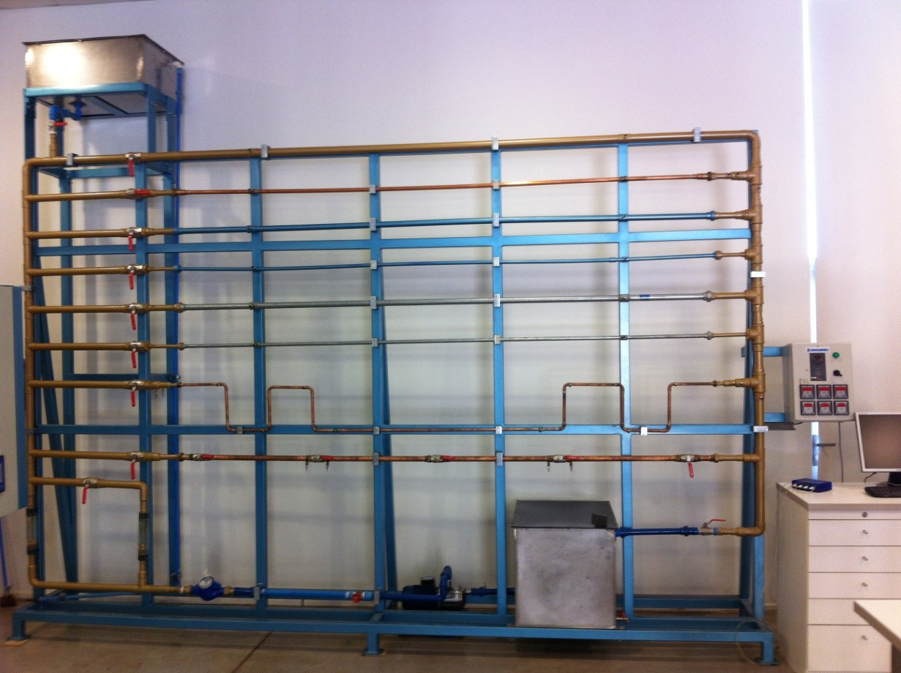

Laboratorio 1. Pérdidas de carga
Contents
Laboratorio 1. Pérdidas de carga#
Descripción de la práctica.#
El objetivo de esta experiencia de laboratorio es estudiar y comprender los fenomenos de flujo interno y pérdida de carga que sufre el fluido al atravesar los diferentes elementos de una instalación hidráulica, como pueden ser tuberías, válvulas, curvas, entre otros.
{kind=link}
La experiencia consiste en medir el caudal que circula por una cañeria y la caída de presión que sufre el fluido que lo atraviesa, utilizando el banco de ensayo en la figura. A partir de estas mediciones, y mediante la ecuación de conservación de energía, podrán obtener la pérdida de carga existente que se verá afectado el fluido. La posibilidad de modificar el caudal de fluido que circula por el sistema permitirá el estudio de la influencia del número de Reynolds en el valor obtenido de las pérdidas de carga.
Debido a que las diferencias de presiones en la cañería son comúnmente pequeñas, el banco de ensayo utiliza mediciones piezométricas conectadas a un conjunto de sensores/indicadores de presión. Los datos recolectados por estos sensores son contínuamente monitoreados por sistema de adquisición de datos.
Metodología experimental#
El video a continuación detalla los pasos para poder llevar a cabo la experiencia
Resumen de los pasos#
Paso 0. Medir dimensiones de la cañería
Utilizando un pie de metro, medir el díametro externo \(D_e\)
Utilizando una huincha, medir el largo \(L\) que separa los puntos de medición de presión.
Determinar el diámetro interno \(D\), a través de catálogos comerciales (se entregará esta información).
Paso 1. Configuración del Software
Hacer click en Setup.
Deshabilitar los canales que no se vayan a utilizar para la medición.
Cambiar las unidades de medida a Pascales \((\mathrm{N/m^2})\)
Graficar los canales utilizados durante la experiencia y posterior a eso seleccionar la opción de muestreo de estadisticas de datos.
Paso 2: Registrar la caída de presión en función del caudal
Ajustar la frecuencia eléctrica del motor de la bomba centrifuga.
Medir el tiempo en el que pasan 10 litros (0.01 m\(^3\)) por el medidor de volumen.
Luego de 6 a 7 segundos detener la toma de datos y registrar los valores de presión en los puntos incial y final.
Reiniciar la medición en el software y volver al punto 1
Paso 3. Detener el sistema y proceder con la toma de muestras en otra cañería
Apagar el equipo desde el panel central, presionando el boton rojo al costado de la perilla donde se modificaba la frecuencia.
Cerrar válvulas de bola de la tubería recién utilizada.
Abrir las válvulas de la tubería a ensayar
Volver a encender el equipo.
Realizar las mediciones, comenzando del paso 0
Actividades a realizar#
Posterior a la experiencia, se deben realizar las siguientes actividades. Los resultados de estas actividades deben ser detalladas en el informe
Actividad 1. Variación de la pérdida de carga en función del caudal#
Graficar la variación de la pérdida de carga lineal (\(h_{pl}\)) en función del caudal, para dos tuberías de diferente material.
Procedimiento. Para cada valor de caudal (\(Q\)):
Medir las presiones al inicio (\(P_i\)) y al final (\(P_f\)) de un tramo de cañería.
A través de la diferencia de presiones (\(\Delta P = P_f - P_i\)), calcular la pérdida de carga lineal mediante:
\[\begin{equation*} h_{pl} = \frac{\Delta P}{\rho g},\quad(\mathrm{m}) \end{equation*}\]donde \(\rho\) es la densidad del fluido de trabajo, y \(g\) la aceleración de gravedad.
Graficar el resulado en un gráfico \(h_{pl}\) vs \(Q\).
Una vez finalizado, repetir el mismo procedimiento con otra tubería de diferente material.
Actividad 2. Pérdidas Lineales y Rugosidad#
Determinar la rugosidad absoluta de las tuberías analizadas, a partir de los valores obtenidos experimentalmente.
Procedimiento Para cada valor de caudal (\(Q\)) y pérdida de carga lineal (\(h_{pl}\)):
Determinar el número de Reynolds
\[\begin{equation*} \mathrm{Re} = \frac{VD}{\nu}, \end{equation*}\]donde \(V\) es la velocidad promediom en el ducto, \(D\) es el diámetro de la cañería y \(\nu\) es la viscosidad cinemática.
Calcular el valor del coeficiente de fricción (\(f\)) mediante la ecuación de Darcy-Weisbach:
\[\begin{equation*} h_{pl} = f \frac{L}{D} \frac{V^2}{2 g},\quad(\mathrm{m}) \end{equation*}\]donde \(L\) es el largo de la cañería.
Determinar la rugosidad relativa (\(\epsilon_r\)) mediante la ecuación de Miller:
\[\begin{equation*} f = 0.25\left[\log\left(\frac{\epsilon_r}{3.7} + \frac{5.74}{\mathrm{Re}^{0.9}}\right)\right] \end{equation*}\]Determinar la rugosidad absoluta mediante \(\epsilon = D\epsilon_R\)
El valor final de \(\epsilon\) corresponderá al promedio de todos los valores estimados para cada caudal.
Actividad 3. Ejercicio propuesto#
Resolver el ejercicion propuesto al final la experiencia